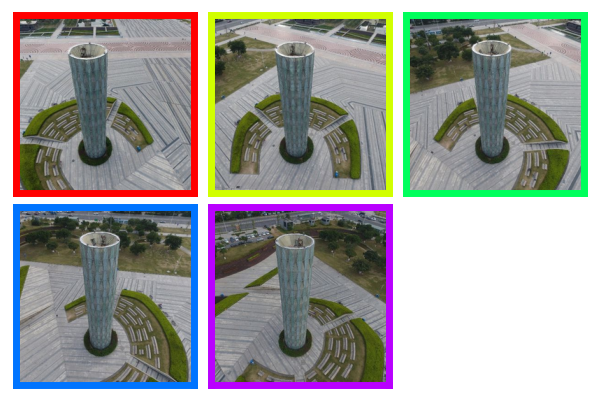
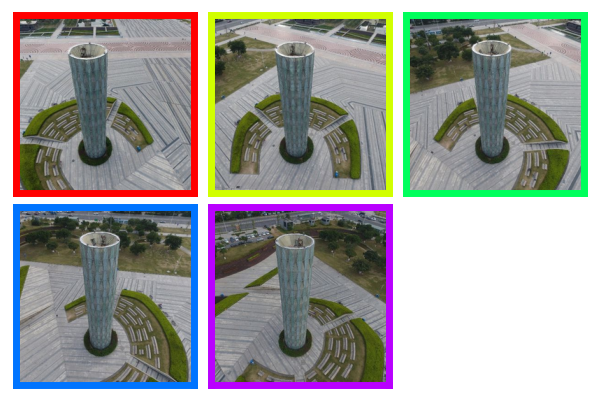

We visualize the features of RayZer and E-RayZer using PCA. E-RayZer learns spatially coherent image representations with better object discrimination.
tl;dr
E-RayZer is a scalable 3D visual representation learner via self-supervised 3D reconstruction.
- E-RayZer is the first self-supervised, feedforward 3D Gaussian Splatting reconstruction model trained from scratch with zero 3D annotation of camera and geometry.
- E-RayZer's latent image representations outperform DINOv3, CroCo v2, VideoMAE V2, etc., on downstream tasks that require 3D awareness, serving as a spatial visual pre-training.
- Compared with previous self-supervised reconstructors (e.g., RayZer), E-RayZer is more geometrically correct.
- Compared with SotA supervised reconstructors (e.g., VGGT), E-RayZer achieves on-par or sometimes better performance and similar scaling trends despite being fully self-supervised.